← PocketD-DIl tuo eroe, il tuo ambiente
Pelle, capelli, taglio e mantello configurabili sul dispositivo. Accampamento, rovine lunari e porto all’alba, con anteprima e conferma.
Queste sono catture del software del firmware 0.84.0 eseguito su PC con un personaggio di prova. La verifica sul dispositivo resta da fare.
Apri l’immagine alla risoluzione originale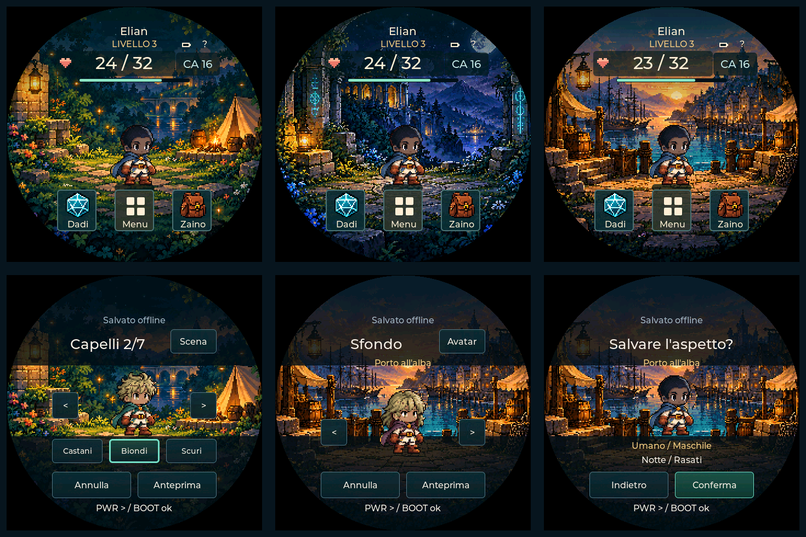
21 specie · 42 silhouette
Ora anche Goblin, Hobgoblin, Bugbear, Kobold e Lizardfolk, con anatomie dedicate. Maschile e femminile sono indipendenti da colori e tagli. Beyond propone la famiglia visiva riconosciuta; puoi cambiarla nell’anteprima o sul dispositivo. Le specie sconosciute richiedono una scelta manuale.
Umano · MaschileUmano · Femminile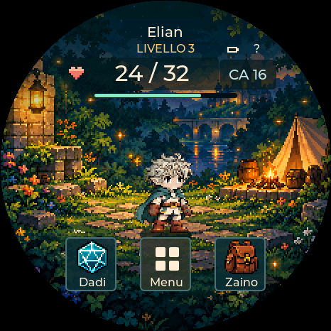
Elfo · MaschileElfo · Femminile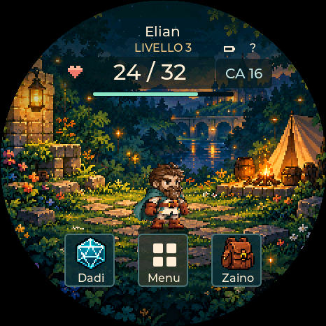
Nano · MaschileNano · FemminileHalfling · MaschileHalfling · Femminile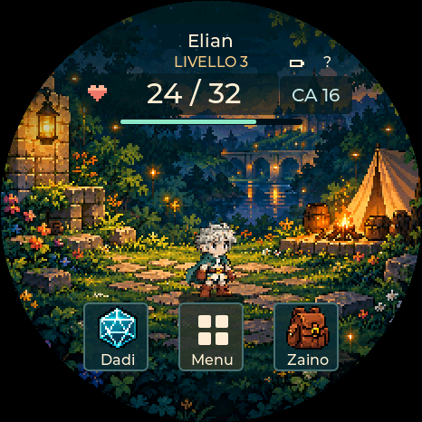
Gnomo · MaschileGnomo · FemminileMezzelfo · MaschileMezzelfo · FemminileOrco · MaschileOrco · FemminileMezzorco · MaschileMezzorco · Femminile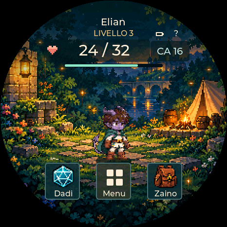
Tiefling · Maschile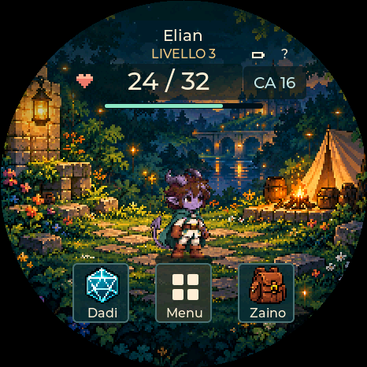
Tiefling · FemminileDragonide · MaschileDragonide · FemminileGoliath · Maschile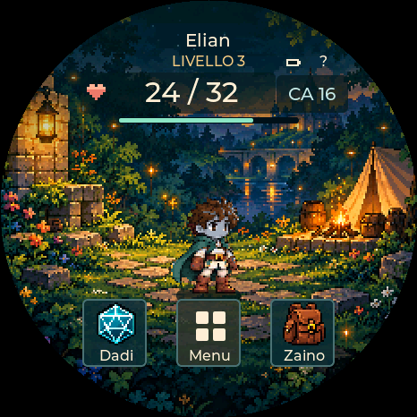
Goliath · FemminileAasimar · MaschileAasimar · FemminileTabaxi · MaschileTabaxi · FemminileKenku · Maschile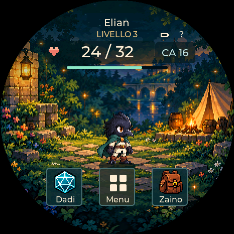
Kenku · FemminileAarakocra · MaschileAarakocra · FemminileTortle · Maschile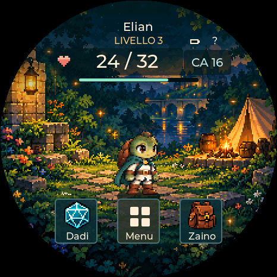
Tortle · Femminile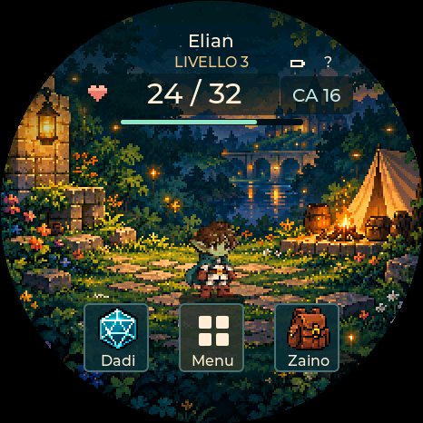
Goblin · MaschileGoblin · Femminile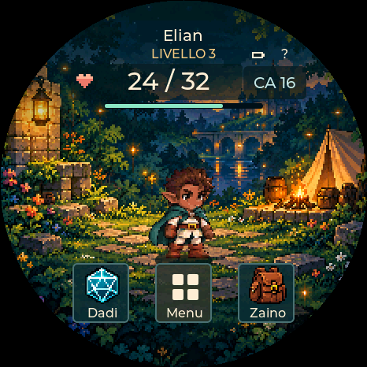
Hobgoblin · MaschileHobgoblin · FemminileBugbear · MaschileBugbear · FemminileKobold · MaschileKobold · FemminileLizardfolk · MaschileLizardfolk · FemminilePreset delle classi · disponibili nella v0.70
504 look: dodici classi per tutte le 21 specie e per entrambe le silhouette. Cappucci e capelli sono disegnati insieme. Solo aspetto: nessun oggetto equipaggiato e nessun valore di gioco cambia.
Scarica il pacchetto SD. Copia la cartella pocketdd nella radice della SD FAT32. Sul dispositivo: Aspetto → Modifica → Classe, Anteprima, Conferma. Senza asset resta lo stile originale. Preset con colori e taglio propri; scelte originali conservate. Un fotogramma neutro per look; movimento e feedback della scena restano attivi.
Catture del renderer del firmware su PC, con file SD letto dal disco host: non sono fotografie né prove del lettore SD fisico.
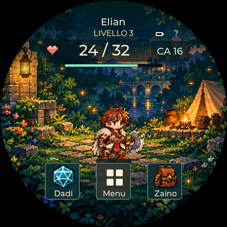
Barbaro · MaschileBarbaro · Femminile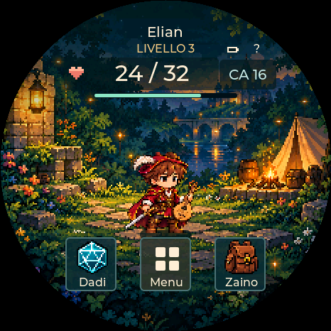
Bardo · Maschile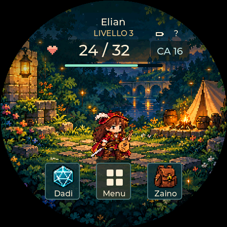
Bardo · Femminile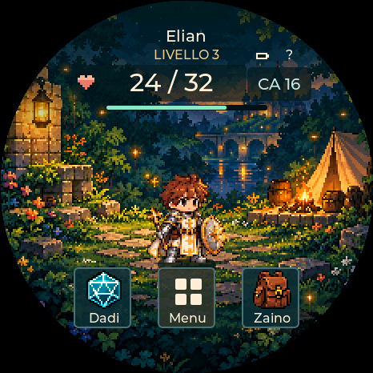
Chierico · Maschile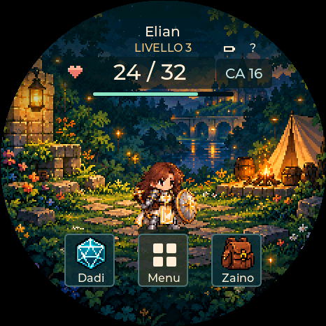
Chierico · Femminile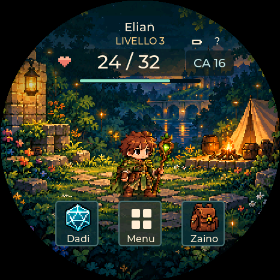
Druido · MaschileDruido · FemminileGuerriero · Maschile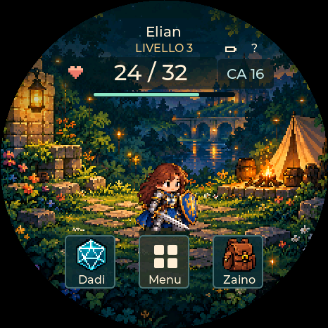
Guerriero · Femminile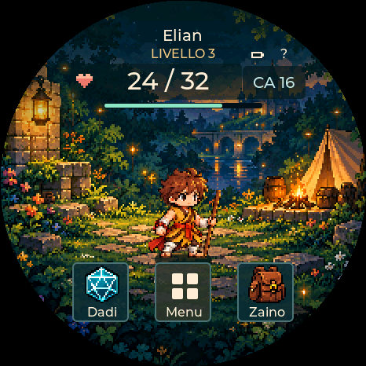
Monaco · Maschile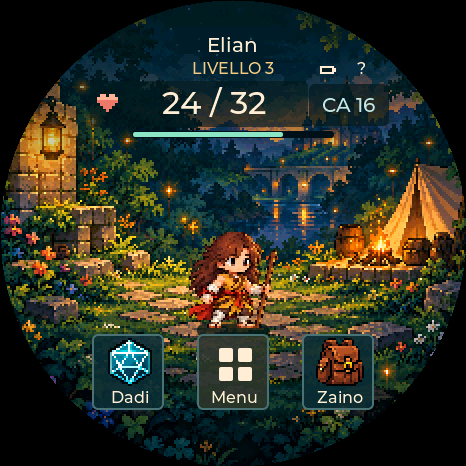
Monaco · Femminile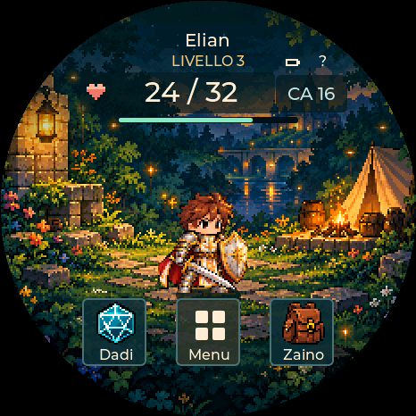
Paladino · Maschile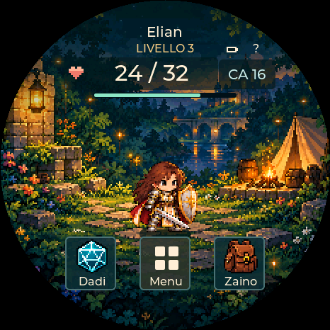
Paladino · FemminileRanger · MaschileRanger · Femminile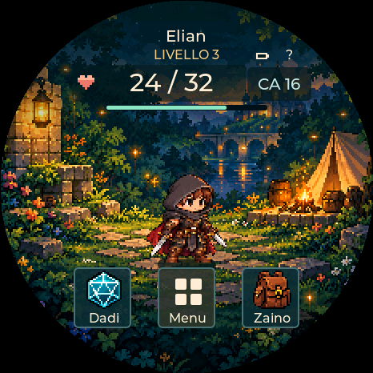
Ladro · MaschileLadro · Femminile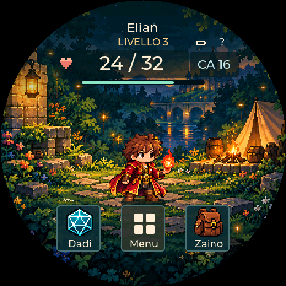
Stregone · Maschile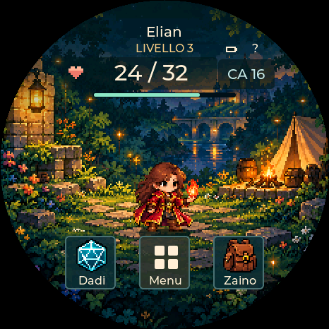
Stregone · FemminileWarlock · Maschile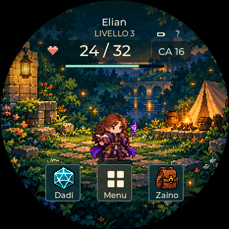
Warlock · Femminile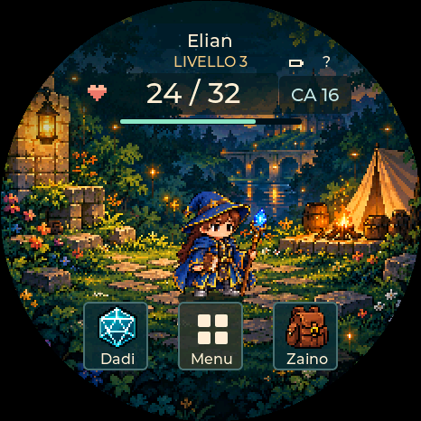
Mago · MaschileMago · FemminileTutte le combinazioni sulla griglia degli sprite
Cataloghi normalizzati: non sono catture del dispositivo.
Catalogo maschile · Catalogo femminile